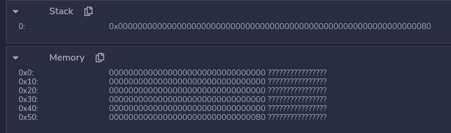
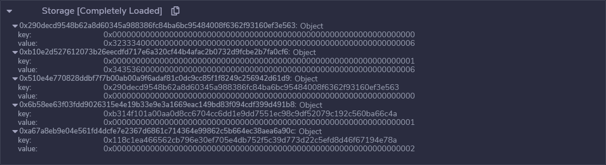
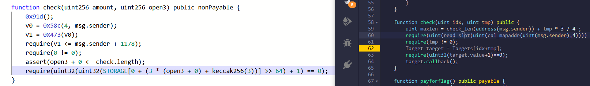
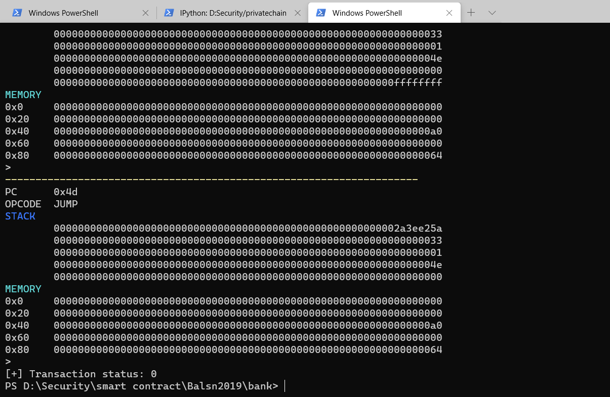

Balsn CTF 2019 - Bank
前几天Retr_0师傅发给我一道区块链题strictmathematician，仔细研究了两三天，学习到了很多新的知识，在此记录一下。由于这道题是pikachu师傅基于Balsn CTF 2019的Bank为原型出的一道题，所以我在pikachu师傅的指点下先去看了Balsn CTF 2019的Bank，以下为复现笔记。（官方wp）
Source
首先查看题目给出的源码：
1 | pragma solidity ^0.4.24; |
内存排布
首先需要弄明白的是两个struct结构体SafeBox和FailedAttempt的内存排布，这里我参考了ctf-wiki。
一直以来我对EVM的字节序一直搞不清楚，为了弄清数据在内存或者Storage里每个字节到底是怎么存储的，我查阅了一些资料，然后发现ethervm.io上已经说的非常清楚了：Ethereum VM是大端机器，字长是256-bits，也就是32个字节。所以说，数据总是从低地址开始存储。
举个例子，uint类型的数据0x80，存放在地址为0x40的内存中的情形，如下图所示：

0x80所占的字节数是32字节，MSB是\x00，LSB是\x80，因为EVM是大端机，所以说MSB存储在低地址，也就是MSB从地址0x40开始存储，一直到0x5f地址处的字节为LSB\x80。
对于bytes、string这种类型的变量，首字节也是存放在低地址，然后依次往高地址存储
这里问了pikachu师傅Remix里Storage存储的k-v对前那一串数字是什么含义，原来是key的keccak值，应该是为了方便定位以该Slot为数组的元素实际的存储地址。

1 | keccak256(0)=0x290decd9548b62a8d60345a988386fc84ba6bc95484008f6362f93160ef3e563 |
根据ctf-wiki，结构体成员总是按slot对齐的，并且在每个slot内部从右到左（从高地址到低地址）紧密排列。官方wp里给出的结构体成员布局：
合约本身的Storage布局
1 | ----------------------------------------------------- |
FailedAttempt
1 | ----------------------------------------------------- |
SafeBox
1 | ----------------------------------------------------- |
未初始化的Storage指针
在Solidity 0.5.0之前，没有初始化的结构体默认会指向Stroage[0]，而不是指向memory。这一默认的行为在0.5.0之后被取消，变量的存储位置必须被显式地声明为memory或者是storage才可以通过编译。所以说源代码中onlyPass的info变量和deposit的box变量都是指向合约Storage存储的首地址的。这一行为使得我们可以将合约的Storage[0]视为结构体一样来修改，破坏了合约Storage中原有的值。
function type
源码中第16行的function(uint, bytes12) internal callback;是我第一次见的用法，在我常用的所有反编译器中都看不到这个变量的用法，而且在solidity文档中也搜索不到，导致我一度认为这个变量是伪变量，不存在实际的操作。

然后自己调试了，调试完后在官方文档里找到了一段对应的描述
Calling an internal function is realized by jumping to its entry label, just like when calling a function of the current contract internally.
这种function类型的变量占据8个字节，就像C语言里的函数指针一样，调用这个变量所指向的函数的时候会使用JUMP指令跳转到该变量所表示的地址上。
如果jump到了非JUMPDEST的指令会发生什么？
经过调试，会直接停止

调试
之前一直用的是Remix套件进行编译和调试，但是调试这个合约的时候运行第一条指令整个Debugger框就没了，想想Remix也不是万能的，不能只会一种工具而产生依赖，于是在tkmk师傅的指导下用geth搭建了自己的私链来调试智能合约交易。
搭建私链
参考了网上已有的教程
- https://geth.ethereum.org/docs/interface/private-network
- https://blog.csdn.net/qq_36124194/article/details/83686740
- https://www.jianshu.com/p/c0cd7a3ade8b
- https://blog.csdn.net/kevinyankai/article/details/102562562
- https://ethereum.stackexchange.com/questions/1492/when-is-the-geth-ipc-file-produced
- https://ethereum.stackexchange.com/questions/37972/does-the-latest-version-of-geth-does-not-create-geth-ipc
自己的启动参数，其中networkid和identity都是可以随便填的，–http –http.corsdomain好像是为了后续调试的，没有细究。
1 | geth --identity "ainevsia" -networkid="35634" --datadir data --nodiscover --http --http.corsdomain "http://localhost:8000" --allow-insecure-unlock console |
不想反复unlock自己的账号，用这里的方法。
web3py
私链的好处就是自己可以完全掌控整条链，不过我在搭建完私链之后第一个想法就是有没有像etherscan一样的web界面可以让我查交易什么的。搜索一番后，其实是有一些开源的小的web应用的，不过好多都没更新了，网上提到最多的一个我也没安装上，而且看简介功能也很少。询问了tkmk师傅，他是用纯命令行操作的，理论上来说命令行可以完成一切etherscan所支持的操作。
但是我geth默认的console不会用，js调用合约传参都不知道该怎么传指定类型的参数，于是又请教了tkmk师傅，去学习了web3py的api，感觉对我来说web3py确实比web3.js好用的多。
web3py的原理是使用JSON-RPC（remote process communication）协议向节点发送指定的RPC操作，接收节点传回的数据。这里的节点就是我们用geth启动起来的。
列举一些常用的操作
1 | from web3 import Web3 |
Debugger
我认为只有学会了如何使用调试器去一步步调试一个东西，才能说入门了一个领域，不然怎么知道它最底层的原理呢？
所以说我刚刚学会了使用w3.manager.request_blocking('debug_traceTransaction', [tx_hash])这个api来调试，我才刚刚入门智能合约安全。
这个api是tkmk师傅告诉我的，我网上搜了也搜不到，但确实就是存在的。
写了一个python脚本来提供一个半交互式的单步调试环境，提供了快进到某条指令的功能
1 | from web3 import Web3 |
Exploit
所以说这道题的问题就在与未初始化的Storage指针，导致我们可以在对应的safeboxes数组和FailedAttempt数组的push操作执行之前对stroage进行一番操作。
但是仅仅对slot[0] slot[1] slot[2]进行修改是没有什么作用的，因为push上去的永远都是本次操作所期望的值，我们必须要通过对slot[0] slot[1] slot[2]进行修改产生更加大的影响。
这一道题非常巧妙的一点在于slot[2]这个位置刚好就是safeboxes数组的长度字段，我们可以通过FailedAttempt数组来将slot[2]改为一个非常大的数值，这样safeboxes数组可以索引到的位置就向后发生了延伸，和FailedAttempt数组的前几个结构体发生了重叠。
我们通过在FailedAttempt数组提前布局好伪造的safebox结构体，就可以通过safeboxes数组索引到该结构体并执行对应位置的代码。
实例分析
攻击者地址0xe2aD27f6079866683a6eD2dF8D7bEa81FA6B19a0
- Calculate
target = keccak256(keccak256(msg.sender||3)) + 2
计算.FailedAttempt 起始地址，+2是发生重叠的地址
0x8e40412da029db6c7a0bad33ca5eeb9582fc94c26e3877c561efdc9c03dae65c + 2
0x8e40412da029db6c7a0bad33ca5eeb9582fc94c26e3877c561efdc9c03dae65e - Calculate
base = keccak256(2).
计算safebox起始地址
0x405787fa12a823e0f2b7631cc41b3ba8828b3321ca811111fa75cd3aa3bb5ace - Calculate
idx = (target - base) // 2.
0x26f45c99c6c0dbc5c3aa250b8321d7f68038b0d051dbb359b3bd07b0b00fc5c8 - If
(target - base) % 2 == 1, thenidx += 2, and do step 7 twice. This happens when thetriedPassof the first element offailedLogsdoes not overlap with thecallbackvariable, so we choose the second element instead.
(nop) - If
(msg.sender << (12*8)) < idx, then choose another player account, and restart from step 1. This happens when the overwritten length ofsafeboxesis not large enough to overlap withfailedLogs.
(nop) - Call
deposit(0x000000000000000000000000)with 1 ether.
满足safeboxes数组有一个元素，可以进入onlyPass - Call
withdraw(0, 0x111111111111110000070f00).
进入onlyPass布置callback指针 - Call
withdraw(idx, 0x000000000000000000000000), and theSendFlagevent will be emitted.
执行callback指针
感谢
- Retr_0
- tkmk
- pikachu
总结
后续希望能够阅读geth的源码深入了解EVM的许多细节。